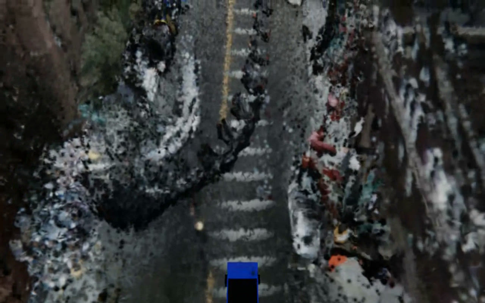

The clip below is the whole point, so let me be upfront about what it is before I explain how it's made. It isn't a game map, and it isn't a NeRF I trained overnight. It's a single drive from the public nuScenes dataset - scene-0103, a twenty-second stretch through Boston's Seaport recorded by a car with six cameras and a spinning LiDAR - reconstructed offline into 3D Gaussian splats and replayed under the exact trajectory the car took. Every lane line, crosswalk, parked car and curbside tree you see was built from that car's sensors. Nothing underneath it is a model of a city; it's the street itself, rebuilt.

So let me work backwards from that clip: what's actually in it, the pipeline that produces it, and - because this is the part most splat demos skip - what it still gets wrong.
What you're looking at
The source is one nuScenes log: six cameras around the roof and a 32-beam LiDAR, about twenty seconds and forty keyframes of driving through the Seaport. Out of that, the reconstruction is roughly 4.77 million foreground Gaussians - the road surface, the parked cars, the building façades - streamed in 50-metre tiles, sitting over an 18.9 million-point background cloud, for about 23.6 million Gaussians all told. It renders in a browser at ~60 fps. Up close it's rough; from a chase camera it's unmistakably the street.
The pipeline
There's a deliberate constraint behind all of this: no per-scene training. The bundle in this post was built analytically in seconds - LiDAR supplies the geometry, the cameras supply the colour, a depth network fills the gaps the LiDAR leaves, a segmentation network deletes everything that shouldn't be in a static scene, and a little linear algebra turns the result into oriented Gaussians sliced into streamable tiles. That's why it builds so fast, and also why it's only as good as it is.
LiDAR for geometry, cameras for colour
The base of every reconstruction is the oldest trick in the book: put the geometry where the LiDAR says it is, and paint it with the cameras. The builder accumulates the LiDAR sweeps across the whole drive into one dense point cloud in a common east-north-up world frame, voxel-dedupes it, and colours each surviving point by projecting it back into whichever of the six cameras actually saw it. Metric structure from the laser, colour from the images.
The catch is that a 32-beam LiDAR is sparse. Past about 30 metres the beams fan out to a metre apart, and any surface roughly parallel to the beams - building façades, most usefully - barely gets hit at all. The raw cloud is full of holes exactly where you most want detail.
Filling the gaps with a depth network
So I lean on a monocular depth model to fill in everything between the laser returns. For each camera frame, Depth-Anything-V2 (Small) predicts a dense relative depth map from the single RGB image. Relative depth on its own has no scale, so I fit a two-parameter scale-and-shift by least squares against the LiDAR points that do land in that frame - the laser stays the metric anchor, and the network only gets to fill the in-between. Then every kept pixel is unprojected into the cloud, and the façades and far range the LiDAR never resolved come in sharp.
Deleting what shouldn't be there
Unproject every pixel, though, and you get a mess: the sky becomes a giant brown smear parked at max range, the road turns into a noisy carpet fighting the ground plane, and every moving car and pedestrian bakes into the static scene as a ghost. The fix is to know what each pixel is before you trust it.
SegFormer-B0, fine-tuned on Cityscapes - 3.7 million parameters, about a second per frame on my M4 - labels every pixel with one of nineteen driving classes. The densifier then keeps only the static structure that isn't represented some other way: building, wall, fence, vegetation, pole, traffic signs and lights. Sky is drawn procedurally, road and sidewalk are handled by a ground plane, and anything that moves is simply dropped. Those kept building pixels are exactly what later becomes the façade tiles.
Oriented Gaussians, not balls
A splat is an oriented 3D Gaussian - a little ellipsoid with a position, a colour, an opacity and a covariance. The lazy way to make one per point is to drop an isotropic ball, and a cloud of balls looks like styrofoam. Instead the builder buckets the points spatially and runs a small PCA in each bucket; the dominant axes give a flattened, surface-aligned Gaussian that lies on the wall or the road instead of floating as a sphere. A planarity gate throws out buckets too noisy to trust an orientation. The payoff is that flat things read as surfaces rather than confetti.
Tiles that know where they are
The finished cloud is sliced into 50-metre tiles with a 5-metre feathered overlap so seams don't pop as you cross them, plus one global background cloud for everything in the distance. The important detail is that every tile stores the GPS coordinate of its own centre. The viewer never loads a fixed scene - each frame, it computes the east/north offset between the camera's live position and each tile's coordinate, places the tile exactly there, and flies the camera along the recorded trajectory baked into the bundle's manifest:
"tile_+0001_+0002": {
"ply_path": "tiles/tile_+0001_+0002.ply",
"center_lat": 42.35144662,
"center_lon": -71.05086228,
"n_gaussians": 400000
}Drop the map underlay and you're left with pure reconstruction - every pixel below placed by where the sensors said it was:

Rendering it in a browser
The viewer is deliberately boring tech: a React + three.js app, with @mkkellogg/gaussian-splats-3d doing the actual back-to-front sort and rasterization on WebGL2. It streams tiles in as the camera approaches, sorts a few million Gaussians per frame, and holds ~60 fps on a laptop - no native engine, no Metal or Vulkan, just the browser.
The view I actually work in has every instrument turned on: the splats over a real street-map plane, a speed-and-heading HUD, and the live camera previews. The map isn't decoration - it's the correctness check. If the splats and the road don't line up, the geo-anchoring is wrong.

What works, and what's still rough
Honestly? The parts I'm happy with are the geometry and the registration. The street is legible, the tiles land where they belong on the map, and the whole thing streams smoothly in a browser with no per-scene training at all - build it in seconds, fly through it immediately.
And the parts that are clearly unfinished: this bundle is stored at spherical-harmonic degree 0, so the colour is flat - there's no view-dependent shading, and surfaces go a little dull as you orbit them. The absolute geo-origin is only trustworthy to about a hundred metres; what actually carries the scene is the relative east/north placement between tiles, which is exact. Dark patches are just places no sensor ever looked. And because this is a constructed cloud rather than an optimized one, it can never be sharper than the depth prior and the camera projection allow.
That last point is the whole roadmap. The natural next step is to stop constructing and start optimizing: a proper per-scene 3D Gaussian Splatting trainer that runs gradient descent against the real frames, plus the small ONNX refiner I've been training to clean up novel views. That's where "legible" turns into "photoreal." This analytic version is the fast floor the trained path has to beat - and it's already a place you can fly through.
The reconstruction shown is scene-0103-lidar-dav2: nuScenes camera + densified LiDAR, gap-filled with a Depth-Anything-V2 prior, masked with a SegFormer/Cityscapes model, fit to ~4.77M oriented Gaussians across 50 m tiles over an 18.9M-point background, and rendered with three.js + @mkkellogg/gaussian-splats-3d. Built analytically in seconds - no per-scene optimization.